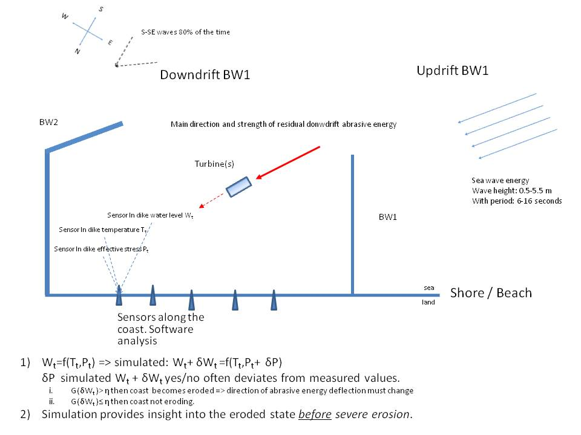

In figure 7, a principle design of breakwater plus data anlysis is presented.
Use is made of the example case of Mar del Plata considering wind direction and wave data.
Along the shore (coast) line a number of (W,T,P) sensor triples
(blue triangles) are placed in the
downdrift area of break water BW1.
The coastal erosion in Mar del Plata occurs because of "sediment poor" water
enters the donwdrift area. The energy in the waves may have and in the case of Mar del Plata actually has, an abrasive effect on the coast.
The turbine (or turbines) are placed in the direction of the main abrasive energy.
Here we follow the prinicple of active optimal placement.
The data science along the coast determines the progression of the erosion.
If necessary, a signal is send to the turbine (or turbines) to adjust the
placement angle to optimally catch the abrasive energy. Of course conditions like wind direction and more generally weather conditions may change the optimal turbine axis angle towards the direction of the abrasive energy.
Of course, unwanted accumulation of sediment on the
updrift side of BW1 still occurs.
This can be solved with, for instance, a moveable sluice gate in BW1, or
the activation of a sand transport fabric when the angular adjustment of the
turbines do not sufficiently diminish the coastal erosion.
The proof of the data science is found at
laboratory computations and
laboratory simulations.
In a certain sense the latter, certainly in the case of breakwaters coastal area, is an ogoing activity.

Fig 7
Design of a breakwater - data science - tidal conversion turbines combination.
Sea wave energy.
Wave height: 0.5-5.5 m, period: 6-16 seconds.